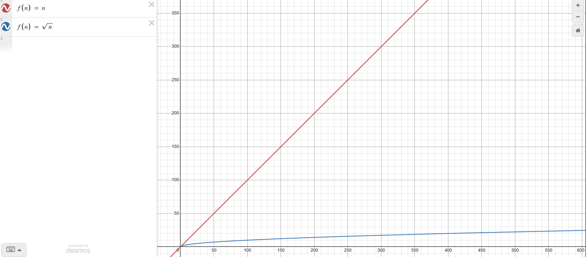

خوارزمية جروفر(algorithm s'Grover)
وهي خوارزمية في الحوسبة الكمية ، ابتكرها العالم لوف جروفر (Grover Lov) في عام(1996) وتعرف ايضاً باسم خوارزمية البحث الكمي . تستخدم في عملية البحث في مجموعة من العناصر الغير مرتبة بسرعة اكبر من الحواسيب الكلاسيكية
\(O(n)= \sqrt{n}\)

من خلال الرسم البياني في الصورة أعلاه، يتضح لنا الفرق الكبير في المدة الزمنية التي تستغرقها خوارزمية جروفر وخوارزمية البحث الخطي في الحاسوب الكلاسيكي . في حين يصل وقت تنفيذ خوارزمية جروفر إلى \(O(n)= \sqrt{n}\) يتطلب الوقت اللازم لتنفيذ البحث الخطي في الحاسوب الكلاسيكي الى \(O(n)=n\)
معلومة
عملية البحث هذه على اعداد غير مرتبة